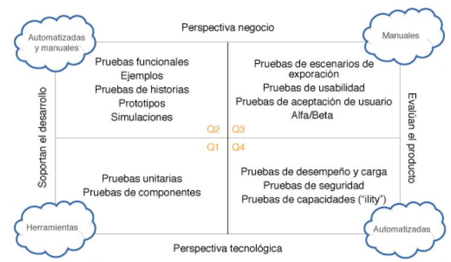

un grupo de personas (directivos, gerentes y personas importantes) de la
industria de sistemas se juntaron en un retiro para charlar de las
problemáticas que enfrentaban con el ciclo de desarrollo de software.
Ellos buscaban centralizar para agilizar los desarrollos, mejorar la
calidad y tiempo de entrega. De esta manera armaron el manifiesto ágil.
Historia de la Agilidad
Manifiesto Ágil
Individuos e interacciones sobre procesos y herramientas: es a través de la comunicación e interacción continua que se llega a
eso, que los equipos pueden trabajar con mayor eficacia.
Software funcionando sobre documentación extensiva: es
mucho más útil y valioso que documentación y ofrece al equipo de
desarrollo la oportunidad de una retroalimentación rápida.
Colaboración con el cliente sobre negociación contractual: Colaborar directamente con ellos mejora la posibilidad de comprender
exactamente lo que requieren y no generar pérdidas de tiempo en entregas
innecesarias o equivocadas.
Respuesta ante el cambio sobre seguir un plan: El
proceso de desarrollo debe estar preparado para cualquier imprevisto que
suceda. Por lo tanto, tener flexibilidad o adaptabilidad en el trabajo
para aceptar cualquier cambio es más importante que simplemente
adherirse estrictamente a un plan.
Valores del manifiesto ágil
Principios Ágiles:
Nuestra mayor prioridad es satisfacer al cliente mediante la entrega
temprana y continua de software con valor.
Aceptamos que los requisitos cambien, incluso en etapas tardías del
desarrollo.
Entregamos software funcional frecuentemente con preferencia al periodo
de tiempo más corto posible.
Los responsables de negocio y los desarrolladores trabajamos juntos de
forma cotidiana durante todo el proyecto.
Los proyectos se construyen en torno a individuos motivados. Hay que
darles el entorno y el apoyo que necesitan, y confiarles la ejecución
del trabajo.
El método más eficiente y efectivo de comunicar información al equipo es
la conversación cara a cara.
El software funcionando es la medida principal de progreso.
Los procesos Ágiles promueven el desarrollo sostenible. Los promotores,
desarrolladores y usuarios debemos ser capaces de mantener un ritmo
constante de forma indefinida.
La atención continua a la excelencia técnica y al buen diseño mejora la
Agilidad.
La simplicidad, o el arte de maximizar la cantidad de trabajo no
realizado, es esencial.
Las mejores arquitecturas, requisitos y diseños emergen de equipos
auto-organizados.
A intervalos regulares el equipo reflexiona sobre cómo ser más efectivo
para a continuación ajustar y perfeccionar su comportamiento en
consecuencia.
Enfoques Ágiles:
Reconoceremos algunos de ellos, para anticipar cómo será la forma de
trabajo de la empresa donde estaremos.
SCRUM: es un marco de gestión ágil que contiene los
siguientes instrumentos y prácticas:
Sprints
Incremento de producto
Trabajo acumulado del producto
Trabajo acumulado del sprint
Definición de preparado y hecho
Acotamiento del tiempo y transparencia
PROGRAMACIÓN EXTREMA: adopta cinco valores para guiar
el desarrollo:
Comunicación
Simplicidad
Retroalimentación
Valor
Respeto
KANBAN: Es un enfoque de gestión que a veces se utiliza
en los proyectos ágiles. El objetivo general es visualizar y optimizar
el flujo de trabajo. Kanban utiliza tres instrumentos:
Tablero Kanban
Limitación de trabajo en curso
Plazo de ejecución.
La creacion de tableros es por medio de Trello o Jira dendiendo de la
herramienta que se utilice.
Ceremonias ágiles:
son momentos de comunicación y reflexión sobre el trabajo humano y de
software.
Tipos de ceremonias ágiles:
DAILY: Son reuniones diarias, de entre 10 y 20 minutos,
donde los miembros del equipo comentan sus tareas realizadas y próximas
a realizar
PLANNING: Es el espacio de planeamiento del sprint,
tomando en cuenta las necesidades próximas del negocio.
REVIEW: También conocida como demo, es el momento donde
el equipo muestra lo trabajado de forma funcional
RETRO: Como la humanidad y la comunicación son parte
importante de estos frameworks, se utilizan las retro como
retrospectivas del trabajo. Estas suceden al final de cada sprint para
revisar qué cosas se trabajaron bien y cuáles mal.
Desarrollo de calidad dentro de la agilidad
Hay algunas prácticas de desarrollo que pueden realizarse en todo
proyecto Los testers de los proyectos ágiles desempeñan un papel
fundamental cuando se trata de guiar el uso de estas buenas prácticas de
prueba a lo largo del ciclo de desarrollo.
Métodos de desarrollo ágil
Desarrollo guiado por pruebas: se utiliza para
desarrollar código guiado por casos de prueba automatizados. Ayuda a
los desarrolladores a concentrarse en resultados esperados. Las
pruebas se automatizan y se utilizan en la integración continua. En
inglés se lo conoce como Test Driven Development o TDD.
Desarrollo guiado por pruebas de aceptación: Este
tipo de desarrollo es un enfoque colaborativo que permite a todos los
implicados entender cómo tiene que comportarse el software y qué
necesitan los desarrolladores, testers y product owners para
garantizar este comportamiento.
Desarrollo guiado por el comportamiento: Éste permite
al desarrollador probar en el código basándose en el comportamiento
esperado. Como las pruebas se basan en el comportamiento exhibido del
software, las pruebas suelen ser más fáciles de entender para los
demás miembros del equipo.
Cuadrantes de prueba
Los cuadrantes de prueba alinean los niveles de prueba con los tipos de
prueba adecuados en la metodología ágil. Cada cuadrante de prueba, está
orientado a distintas cosas:
El negocio (o usuario)
La tecnología (o desarrollador)

Cuadrante Q1: Nivel unitario, está orientado a la
tecnología y apoya a los desarrolladores. Este cuadrante contiene
pruebas unitarias.
Cuadrante Q2: Nivel sistema confirma el
comportamiento del producto. Este cuadrante contiene pruebas
funcionales, ejemplos, pruebas de historia, prototipos de experiencia
de usuario y simulaciones. Estas pruebas comprueban los criterios de
aceptación y pueden ser manuales o automatizadas.
Cuadrante Q3: Nivel de aceptación de sistema o
usuario. contiene pruebas que critican el producto, utilizando
escenarios y datos realistas. Este cuadrante contiene pruebas
exploratorias, escenarios, flujos de procesos, pruebas de usabilidad,
pruebas de aceptación de usuario, pruebas alfa y pruebas beta.
Cuadrante Q4: Nivel de aceptación de sistema u
operativa. Este cuadrante contiene pruebas de rendimiento, carga,
estrés y escalabilidad, pruebas de seguridad, mantenibilidad, gestión
de la memoria, compatibilidad e interoperabilidad, migración de datos,
infraestructura y pruebas de recuperación.
Rol del tester en el equipo ágil
Acá observamos específicamente el rol de un tester en un proyecto que
sigue un ciclo de vida Scrum. El papel de un tester dentro de un equipo
ágil incluye actividades que generan y proporcionan retroalimentación,
no sólo sobre el estado de la prueba, sino también sobre la calidad del
proceso y del grupo de desarrollo.
Actividades del rol del Tester:
Comprender, implementar y actualizar la estrategia de prueba.
Asegurar que se programen las tareas de prueba adecuadas durante la
planificación de la entrega y la iteración.
Participar de forma proactiva en las retrospectivas del equipo,
sugiriendo e implementando mejoras.
Configurar, utilizar y gestionar los entornos de prueba y los datos de
prueba.
Entrenar a otros miembros del equipo en los aspectos relevantes de la
prueba.
Colaborar activamente con los desarrolladores y los implicados del
negocio para aclarar los requisitos.
Sprint Cero:
es la primera iteracion del proyecto. El tester colabora con el equipo
en las siguientes actividades: Identificar el alcance del proyecto,
planificar, adquirir e instalar las herramientas necesarias, crear una
estrategia de prueba, realizar un análisis del riesgo, especificar la
definición de hecho y definir cuándo continuar o detener la prueba,
entre otras actividades...
Prácticas de Prueba Ágil:
Hay muchas prácticas útiles para los testers en un equipo de ágil:
Trabajo en pareja: dos miembros del equipo se sientan
juntos en un puesto de trabajo para realizar una prueba u otra tarea.
Diseño de prueba incremental: los casos de prueba se
construyen a partir de las historias de usuario y otras pruebas.
Mapa Mental: los mapas mentales son una herramienta
útil a la hora de probar.
Competencias de un tester Ágil
un tester en un equipo ágil debe ser competente en la automatización de
la prueba, el desarrollo guiado por pruebas, la prueba de aceptación,
caja blanca, caja negra y la prueba basada en la experiencia.